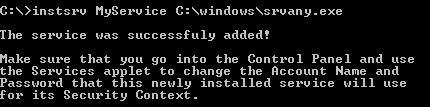
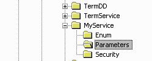
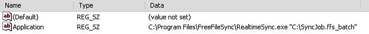
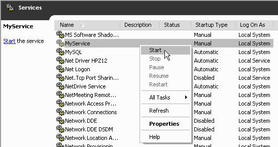
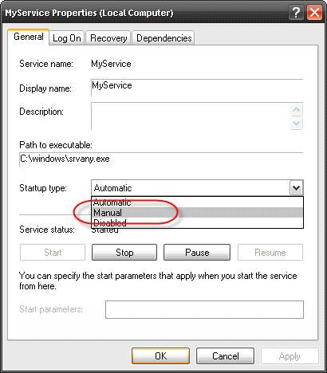

The following step-by-step guide describes how to setup RealtimeSync (or any other application) as a Windows Service. This can be useful if the tool shall run on a SYSTEM account without necessarily requiring a user to log in.
1. Get access to the command-line tools "instsrv.exe" and "srvany.exe" which come with the Windows Server 2003 Resource Kit Tools:
2. Create and register a new Service via command line:
instsrv <ServiceName>
<PathToResourceKit>\srvany.exe

3. Link the new Service with RealtimeSync:
Open the Registry editor (Regedit.exe) and navigate to key "HKEY_LOCAL_MACHINE\SYSTEM\CurrentControlSet\Services\<ServiceName>"
Add
a new key "Parameters".

Add
a new String value named "Application"
and specify a command line that shall be executed as value.

That's it!
Attention: Enable
checkbox "Silent mode" to prevent showing a status
dialog at the end of the process. Set
"Error handling" to either "Exit
instantly" or "Ignore errors".
When running
RealtimeSync as a service the application has no means to interact
with the user. Therefore any popup dialog will stop the process
flow! Consequently consider the following rules when setting up a
FreeFileSync batch job:
The new service can now be started via commandline or Windows Service administration:
net start <ServiceName>

Note:
By default the
service is created with startup type "automatic" which
runs it on Windows start. This behavior can be changed in Windows
Service administration.

If the Service shall be removed from the system, enter via command line:
instsrv <ServiceName> remove
(Reference: http://support.microsoft.com/kb/137890)